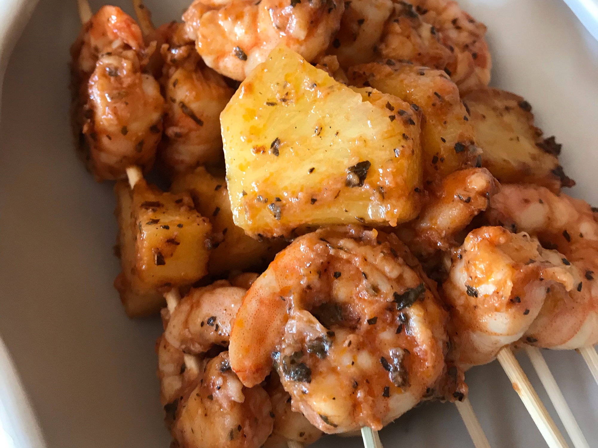

Marinated Grilled Shrimp

Description
A nice yummy dish that's spicy and sweet at the same time. It's a safe bet when hosting a BBQ
It's easy to prepare and goes well with garlic bread, salad and even baked potatoes
Ingredients:
- ⅓ cups of olive oil
- ¼ cups of tomato sauce
- 3 cloves of garlic, minced
- 2 tablespoons of red vinegar wine
- 2 tablespoons of fresh basil, chopped
- ½ teaspoons of salt
- ¼ teaspoons of cayenne pepper
- 2 pounds of fresh shrimp, peeled and deveined
- 6 each skewers
Steps:
- Stir together olive oil, tomato sauce, garlic, and red wine vinegar in a large bowl. Season with
basil, salt, and cayenne pepper. Add shrimp to the bowl; stir until evenly coated. Cover and
refrigerate for 30 minutes to 1 hour, stirring once or twice.
- Preheat the grill to medium heat. Lightly oil the grate.
- Thread shrimp onto skewers, piercing once near the tail and once near the head. Discard marinade.
- Cook shrimp on the preheated grill until opaque, 2 to 3 minutes per side.
Return to home page